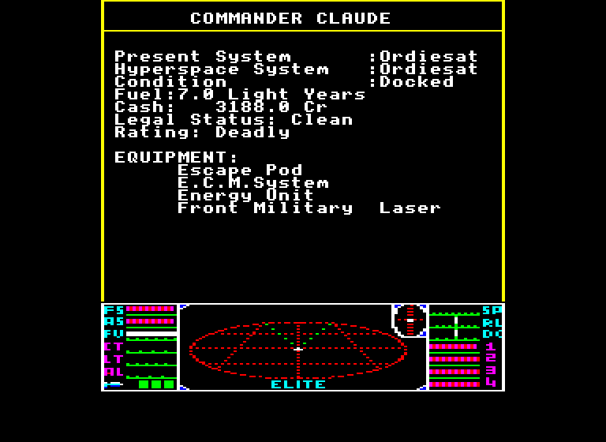

Flying Elite in Weight Space
Neural networks written by hand, by an LLM, with no training, flying a 1986 space game in your browser and on a microcontroller.
This month, MIT CSAIL showed that frontier LLMs can write neural network weights directly, as a program, with no gradients. We tried it on something awkward and joyful: Acornsoft Elite, flown on an emulated BBC Master through nothing but its joystick and keys.
Every unit in these networks has a name and a job. An LLM wrote them, watched them fly, read how they lost, and changed the weights behind the failure. There's a pilot for each goal. One wins efficiently and one plays fair from the screen alone, and both reach Elite, the game's top rank, in about 16 game hours. The third tries to put on a good show instead. They are small enough to fit beside the emulator on a Pimoroni Presto, a palm-sized microcontroller board.
Win
Optimal reads the game's memory and wants points a minute.15.5 h to Elite16 KB of weights, no deaths in two careersPlay fair
Fair knows only what a player could see on the screen.16.7 h to Elite9 KB dogfights, 13 KB docking, no deathsPut on a show
Curious is scored on what a viewer gets to watch.8× the close-ups25 KB, at a real cost in points and deathsHow a network flies the ship
Elite gives you a stick and a keyboard. You can't strafe: to reach a ship you roll until it's above you, then pull up. Roll runs to ±31 and pitch only to ±8, in units of about 1/256 of a radian a game loop, so a half turn takes about five seconds, and a ship flying the other way is a long way off by then. Top speed is 40.
The networks use exactly these controls. A dogfight network has four outputs, and each one ends at something a player could hold or press on a BBC Master:
| Output | Range | What reaches the game |
|---|---|---|
roll | −31 to +31 | Analogue joystick, left and right (ADC channel 0). About 4 stick units for each unit of roll rate, from the centre at 128, with finer steps under 4. |
pitch | −8 to +8 | Joystick, up and down (ADC channel 1). About 16 stick units a unit. The game ignores the first 32 units of stick, so gentle pitch is coarse. |
fire | above 0.5 | Holds the A key, unless a non-hostile ship is in the sights, a check that stays in C. The laser fires from the view on screen. |
throttle | 0 to 40 | Holds SPACE (faster) or ? (slower) until the speed matches. |
Key changes land two frames after they're asked for, and the game reads its keys once a game loop, about every two frames. The docking network has the same stick and throttle, the J key for the in-system jump, and three outputs that come back as its own inputs next loop, its only memory. Everything else stays in ordinary C: choosing targets, missiles, ECM, the escape pod, trading, and which view to show.
What is fair?
Optimal cheats openly: it reads every ship's position from RAM. Fair's rule is that it may know only what a player could know from the screen, the game's published rules and its own notes. That rule is about information, not hands. It's still a machine, with perfect attention and arithmetic, and it reacts within the frame.
One thing to be clear about: Fair doesn't do computer vision. It reads ships from RAM and immediately degrades them to what the screen would show, through a model of the display, and a tracker works only from that. So fairness rests on that model being honest, and the code is open for checking it.

What it reads from RAM, and how a player would know it
| Read from RAM | How a player gets the same thing |
|---|---|
| Each ship's position, type and whether it's exploding | Only through the display model: its pixel, its drawn size, its scanner dot. A slot number is used just to follow one ship between frames, as an eye follows a moving dot. |
| Energy, shields, laser temperature, altitude | The dashboard's bars, returned at the bar's precision, not the exact value. |
| Our speed, and the stick position | The speed bar, and what your own hands did. |
| Game loop counter | Watching the screen redraw: each loop draws a new frame of the ships. |
| Current view, cash, fuel, cargo, equipment, legal status | Printed on screen, on the dashboard or on a docked page. |
| Top byte of the kill tally | The “RIGHT ON COMMANDER” message, printed each time it counts up. |
| Planet, sun and station positions, and the station's axes | On screen or on the compass, and the slot's axis always points at the planet. A simplification: their distances aren't reduced to screen precision, so a player would have to estimate them. |
What it never reads, and works out instead
| Hidden | What Fair does instead, as a player would |
|---|---|
| A ship's exact range | Judges it from drawn size, using the blueprint, or from the scanner dot. The tracker keeps its own error bar. |
| Ship type and heading | A far ship is a dot, so it has only a colour until it's near enough to draw as a wireframe: about 5,000 units for a Sidewinder, 12,800 for a Cobra Mk III. |
| A ship's energy | Starts from the blueprint, subtracts its own hits, and adds the recharge rate. |
| Whether a ship is hostile | Goes by model and behaviour: it fired at us, or its nose stayed on us while closing. This one is hard. Fair's first careers shot a launched Transporter that was still an unidentified dot. It counts as police, so the agent became a fugitive and lost 310 ships in 45 game hours. |
| A ship that has left the screen | Follows it on the scanner, or predicts where it should be for 3 seconds. |
So the network's 23 senses each have a source a player could point at: direction and drift from the pixel, size and range from the drawing or scanner, closing speed from the range changing, and energy, heat and speed from the bars. Four more are unusual: how stale the last sighting is, how unsure the range is, how unsure the motion is, and whether the heading was actually seen. It flies knowing what it doesn't know.
Two game choices are allowed but worth flagging: it saves at every dock and reloads after a death, and it uses the game's hidden forced mis-jump to farm Thargoids in witchspace, which is most of a career's points. An optional hand limit, slowing the stick and capping keys, costs about 5% of the points a fight minute in the lab. It's off in these results.
Writing a pilot in weights
In weight-space programming, an LLM reads and writes a network's weights directly, reasoning about what each part should compute. Here, the program is a stack of ReLU layers whose units are written to mean things. A logical AND is just a sum and a bias. This is the unit that decides to fire on the camera network, as stored:
# layer 4, unit "fire": AND of six saturated 0-or-1 tests. fire = relu( +1·in_the_sights +1·ahead +1·in_range +1·laser_cool +1·shot_allowed +1·a_target −5 ) # layer 2, unit "stuck": a chase we aren't winning. It allows a shot at range. stuck = relu( +1·ahead +1·not_closing −1·drawn_big −1 )
Optimal's and Curious's networks were written from scratch for their goals, not transcribed from the agent's C rules. The networks run on about 60 lines of plain C, with no ML library. The diagrams below are the demo's own code, running that forward pass in your browser on the senses each network really saw, and every line is a non-zero weight.
Experiment 1Can it fly fair?
Yes, close to the hand-written rules it replaced. The dogfight network scores 97.1% of the C rules' points a fight minute on 450 held-out fights, and fair-mode careers with both networks reach Elite in 16.7 and 17.0 game hours with no deaths. The docking network flies from hyperspace exit to docked, matching the station's roll on the way in, and it's 2.8% cheaper than the C law on 69 held-out docks, with a sixth of the stick reversals.
Setup
- Dogfights
- 23 senses → 30, 26, 16, 14 → 4 outputs. 2,256 weights, 187 non-zero.
- Docking
- 47 senses → 112, 179, 42, 30 → 7 outputs. 1,471 non-zero weights.
- Method
- Written unit by unit, first with the C rules' numbers, then tuned by evolution in the lab. No gradients.
- Measure
- Fights recorded from two careers, each flown from the identical snapshot in a fresh process. 90% interval on the ratio: 94.5–99.7%.
Experiment 2Can it fly for points, weights only?
Nearly. The interceptor was written for points a minute using exact senses, with no evolution at all: every constant was chosen from the game's geometry, measured, and fixed by reasoning. It scores 20.85 points a minute against the C rules' 21.52 over 372 held-out fights, with no deaths, and reaches Elite in 15.5 and 15.6 game hours on two seeds, against 14.8 and 15.1 for the C rules. So it doesn't beat them. It does get within 3% with 244 non-zero weights.
Setup
- Network
- 23 senses → 35, 32, 33, 18, 14 → 4 outputs. 4,019 weights, 244 non-zero.
- Tried and cut
- Steering with the target's motion across the sky sounded good and cost points, with or without a nose hold. A hold of the roll near the nose made a limit cycle. Both are zero now, kept as named parameters.
- Measure
- Careers are one path each, so the paired fights are the real measure.
Experiment 3Can you program for fun?
This is the part no training curve would suggest. On the same snapshot, Optimal and Fair end the fight in about four seconds, shooting a ship drawn two pixels wide. It's excellent flying and terrible television. So Curious asks a different question: what does a person watching actually see?
The camera network flies gently, leaves a dead zone so ships drift across the frame, brakes into a pass, and holds fire until a ship is big. Its objective is a meter counting seconds of what's in the picture. On that same snapshot it stayed for 165 seconds and drew the target up to 85 pixels. Most of its best changes came from someone watching it and saying what was wrong, then an LLM reading a frame-by-frame trace to find the unit responsible:
- “Just firing at dots for ages.” The laser now holds for 64 px or a very close pass. Only a chase that's truly being lost is shot at range, which took fights stuck at the lab's time cap from 13 of 55 to 2.
- It looked backwards while the target was in front. The view ran on timers, and since the laser fires from the view shown, this wasted shots too. It now follows the target.
- Every pass ran the same dull cycle. Across at full speed, 4,800 units apart by the end of the turn, then all the way back. A braking unit keeps closing speed in proportion to range.
- It held a Cobra in frame for 55 seconds without firing. One new AND: big, and no longer growing, means shoot. The meter disliked this change. We kept it, because the meter was wrong.
- The flyby never flew. Its gate needed the target at an extreme of the clock, so sweeping its threshold from 3 to 99 changed nothing at all. A corrected version made no measurable difference, so it isn't in.
| 317 held-out fights | Fight | Close-up | Mid-size | Dots | Deaths |
|---|---|---|---|---|---|
| C rules | 37 s | 0.6 s | 5.5 s | 31.4 s | 14 |
| The camera | 52 s | 4.8 s | 9.6 s | 37.1 s | 30 |
Time with a ship readable on screen rises from 16% of a fight to 28%. The price is real: at 25 game hours it scores 867 and 733 points with 48 and 62 deaths, against 1,310 and 1,288 points with 26 and 29 deaths for the C rules. Most of each fight is still a dot, because ships appear about 9,000 units out. A show pilot is allowed to die, but this one isn't good enough yet.
Setup
- Network
- 23 senses → 42, 43, 45, 23, 15 → 4 outputs. 6,319 weights, 406 non-zero. No evolution.
- Handover
- When the ship is in danger, the fight goes to the interceptor, which ends it quickly.
- Meter
- Close-up: a hostile drawn 24 px or more in the picture. Mid-size: 10–24 px. Dots: everything else.
Small enough for a microcontroller
The agent runs inside the emulated game's own world with no OS, heap or ML library, so the same C compiles for a Pimoroni Presto, a small RP2350 screen. It emulates the BBC Master and flies it at once.
We are checking this on a real board now, and will publish the measured figures here when that run finishes.
| Network | Weights in flash | Non-zero |
|---|---|---|
| Fair: dogfights | 9.0 KB | 187 |
| Optimal: interceptor | 16.1 KB | 244 |
| Curious: camera | 25.3 KB | 406 |
| Docking (each of two sets) | 13.3 KB | 1,471 |
What this does and doesn't show
- This isn't the post's zero-shot result. Its strongest experiment writes a network with no environment feedback. Ours had a fast lab and many rounds of measuring, so it's closer to programming than to one-shot generation.
- A person was in the loop. Goals, taste and many of the diagnoses came from someone watching. The LLM wrote the weights and traced the causes.
- The C rules still win on points. The appeal isn't that this beats a good hand-written controller yet. It's that a network can be read, argued with and fixed one unit at a time.
- Our samples are small. Careers are two seeds each, and fights are chaotic: a tiny change can move a set's average. We confirm on held-out sets, and we've still been fooled.
- Known bug. The docking final sometimes flies into station traffic. Two such collisions killed a police-flagged ship in one 200-minute Curious log, which is what newly raised the Offender status there. It isn't fixed yet.
What surprised us most is how ordinary this felt. “Don't shoot it until it's big” turned into one unit, and a viewer's complaint could be traced to a specific weight. Neural networks are rarely this easy to talk to.
Try it, read it
Watch it fly and switch modes at the top: the panel lights the same diagrams live. Weights, labs and logs are all in the repository; start with Fair's write-up and the modes' lab notes, which include what failed.
The technique: Rikiya Takehi, Jayden Teoh, Alex Zhang, and Omar Khattab. “Sparks of Weight-Space Programming: LLMs can natively read & write neural network weights.” November 2026.